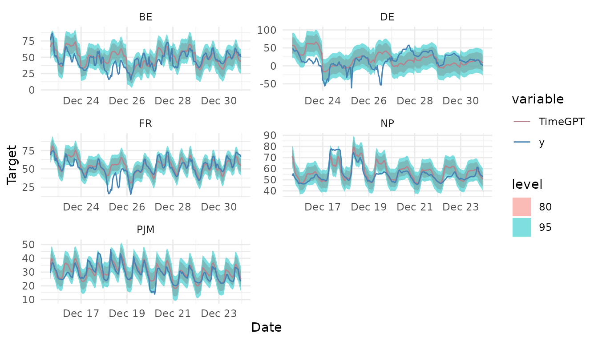

Historical Forecast
historical-forecast.Rmd1. TimeGPT Historical Forecast
df <- nixtlar::electricity
head(df)
#> unique_id ds y
#> 1 BE 2016-12-01 00:00:00 72.00
#> 2 BE 2016-12-01 01:00:00 65.80
#> 3 BE 2016-12-01 02:00:00 59.99
#> 4 BE 2016-12-01 03:00:00 50.69
#> 5 BE 2016-12-01 04:00:00 52.58
#> 6 BE 2016-12-01 05:00:00 65.05
timegpt_fitted_values <- timegpt_historic(df, id_col = "unique_id", level = c(80,95))
#> Frequency chosen: H
head(timegpt_fitted_values)
#> unique_id ds TimeGPT TimeGPT-lo-80 TimeGPT-lo-95
#> 1 BE 2016-12-06 00:00:00 55.75632 42.06646 34.81949
#> 2 BE 2016-12-06 01:00:00 52.82020 39.13034 31.88337
#> 3 BE 2016-12-06 02:00:00 46.85107 33.16121 25.91424
#> 4 BE 2016-12-06 03:00:00 50.64088 36.95103 29.70406
#> 5 BE 2016-12-06 04:00:00 52.42040 38.73055 31.48357
#> 6 BE 2016-12-06 05:00:00 55.65593 41.96607 34.71910
#> TimeGPT-hi-80 TimeGPT-hi-95
#> 1 69.44617 76.69314
#> 2 66.51005 73.75703
#> 3 60.54093 67.78790
#> 4 64.33074 71.57771
#> 5 66.11026 73.35723
#> 6 69.34579 76.592762. Plot TimeGPT forecast
nixtlar includes a function to plot the historical data
and any output from timegpt_forecast,
timegpt_historic, timegpt_anomaly_detection
and timegpt_cross_validation. If you have long series, you
can use max_insample_length to only plot the last N
historical values (the forecast will always be plotted in full).
timegpt_plot(df, timegpt_fitted_values, id_col = "unique_id", max_insample_length = 200)
#> Frequency chosen: H